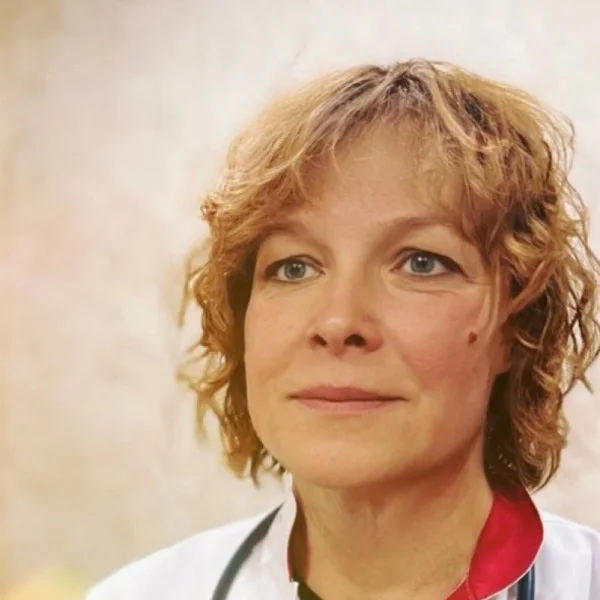

Базовое и дополнительное образование
- Закончила 1 Московский Медицинский Институт им. И.М. Сеченова в 1988 г по специальности «лечебное дело» с отличием. Диплом РВ № 576771 от 13.06.1988
- Закончила ординатуру по Терапии на базе ГКБ № 52 в 1990 г
- имею действующий Сертификат специалиста № 1177040031715, по специальности «Терапия» от 10.03.2020 г (МУИР)
- в 2020 г. прошла профессиональную переподготовку на базе ООО «ПЛС» по программе «Специалист по модификации образа жизни и немедикаментозному оздоровлению» (HEALTH COACH)
- в 2022 г прошла обучение по дополнительной профессиональной программе «Продукты питания как альтернатива лекарствам. Персонифицированный доказательный подход в превенции хронических заболеваний» на базе ООО «Университет образовательной медицины»
Врач высшей категории, терапевт, с интегративными методами диагностики и лечения, немедикаментозными методами восстановления здоровья, специалист по пульсовой диагностики, нутрициолог.
В своей практике использую системный интегративный подход и анти-age методики. Применяю сочетание методов классической и Восточной медицины для диагностики и разработки программ восстановления здоровья. Цель методики: продлить активный период жизни, замедлить темпы старения
Работа с пациентом предусматривает совместную долгосрочную работу с его активным участием, с акцентом на качество жизни и снижение биологического возраста
Полная консультация включает:
Сбор анамнеза, осмотр (аускультация, пальпация, измерение АД и ЧСС, функциональные пробы и пр), пульс –диагностика на приборе Веда-пульс, разбор выявленных функциональных дисбалансов и рисков, составление программы реабилитации (коррекция образа жизни, рекомендации по питанию, назначение лекарственных и нутрицевтических препаратов, дополнительных обследований – при необходимости)
При необходимости использую в работе методы лабораторной диагностики:
- Хромато-Масс спектрометрия микробных маркеров по Г.А. Осипову: определение бактериальной, вирусной и грибковой нагрузки, оценка проницаемости кишечной стенки, выявление причин воспалительных процессов и нарушения метаболизма в организме, что позволяет разработать индивидуальную методику поддержания микробиоты в гармоничном состоянии.
- Метод Иммунохелс: диагностика иммунологических реакций «гиперчувствительности замедленного типа», которые лежат в основе развития воспалительных процессов в организме и формирования хронических заболеваний (в том числе развития инсулинорезистентности и аутоиммунных заболеваний, набора избыточного веса…). Индивидуальный подбор рациона на основе теста Иммунохелс и восстановления баланса микробиоты позволяет добиться длительной ремиссии и даже излечения хронических заболеваний. Программа предусматривает ведение пациента на протяжении длительного (3-4 месяца) периода
- Исследования волос на баланс биоэлементов: показывает содержание макро- и
микроэлементов в организме, показывает в достаточном ли количестве элементы поступают в организм и выводятся при их избытке. Анализ позволяет составить комплексную оздоровительную программу по коррекции микроэлементного статуса организма.
- Иммунологический метод «Адимустат»: оценка ресурсов состояния здоровья человека на основе определения иммунологических маркеров адаптации, отражающих состояние основных систем биохимической регуляции гомеостаза. Исследование оценивает уровень катехоламинов (дофамин, адреналин, норадреналин), биогенных аминов (серотонин, гистамин), опиоидных пептидов (эндорфин, дерморфин), Гамк, глутамата, ангиотензина II, брадикинина, вазопрессина, орфанина, тромбина.
Метод выявляет ранние иммунологические маркеры снижения мотивации, болевого порога, выносливости, устойчивости к стрессу, к кардионагрузкам и пр. Позволяет оценить физическое здоровье, резервы адаптации и работоспособности, составить программу коррекции выявленных дефицитов эндогенных биорегуляторов и оценивать эффективность лечения.
Еще образование и трудовая деятельность:
- имею Свидетельства о повышении квалификации по дополнительной профессиональной программе:
- Продвинутые психологические, консультативные и коучинговые технологии
для модификации образа жизни и немедикаментозного оздоровления
- Нутрициология (РУДН)
- Диетология (Российская медицинская академия постдипломного образования Министерства здравоохранения РФ)
- Фармакотерапия в гастроэнтерологии (Московский Государственный Медико-стоматологический Университет, кафедра пропедевтики внутренних болезней и гастроэнтерологии)
- Актуальные вопросы пульмонологии (Кафедра Пульмонологии ФППОВ)
- Имею сертификаты о прохождении мастер-классов и курсов:
- Клиническое применение скрининговых методик биоимпедансного анализа и ангиосканирования у пациентов с различными соматическими заболеваниями
- Окислительный стресс и митохондриальная дисфункция как основа функциональных дисбалансов
- Липидзамещающая терапия – сверхэффективный инновационный метод менеджмента хронических заболеваний и старения
- Эриксоновский гипноз
- Ежегодная международная конференция «Перекресток семи дорог» 2022 и 2023 гг
- Патогенез, диагностика и лечение Covid-19 и постковидного синдрома
- Питание для профилактики онкологических заболеваний
- С 2019 г являюсь профессиональным пользователем прибора пульсовой диагностики «Веда-пульс», прошла обучение на базе ООО «Биоквант», использую компьютерную пульсовую диагностику в своей профессиональной (оздоровительной) деятельности.
Веда-пульс – это аппаратно-программный комплекс пульсовой диагностики, технологии которого позволяют:
1 - проводить оценку функционального состояния человека на основе методов оценки, принятых как в современной физиологии, так и в Традиционной китайской медицине, Аюрведе.
2 - формировать программу индивидуальной реабилитации пациента.
Программа позволяет учитывать индивидуальные и конституциональные особенности пациента при составлении программы питания, приема нутрицевтиков, образа жизни, режима дня, особенностей рекомендуемой физической нагрузки т.д.
Исследование на приборе занимает примерно 7-10 минут.
Диагностика позволяет оценить:
- эффективность систем детоксикации
- состояние иммунной системы (в том числе, риск заболевания короновирусом и другими респираторными вирусами, варианты течения болезни)
- уровень системного воспаления в организме
- уровень стресса
- состояние митохондриального пула
- оценить состояние различных органов и систем и возможные варианты их патологии
- На базе ООО «Биоквант» прошла курсы:
- Нейродиетология
- Развитие психосоматических заболеваний с точки зрения чакр
- Основы неврологии для специалистов по здоровому образу жизни
- Экспертное изучение Дош и Субдош
- Аюрведческий уход за кожей и современная косметология
- Трехэтапная реабилитация после перенесенных респираторных заболеваний
- Принципы антипаразитарной терапии
- Эффективный детокс. Как избежать ошибок в работе с пациентом
- Обзор аюрведческих фармакологических препаратов
- Экспертные вопросы нутрициологии
- В 2020-2021 гг прошла обучение на базе общеобразовательного проекта Probio по темам:
- Биоэлементный статус организма: метод диагностики и тактика коррекции
- Курс по микробиоте и методу МСММ (по Осипову)
В настоящее время заканчиваю обучение на интенсив-практикуме «ХМС по Осипову в практике специалиста 2.0»
С 30.10.23 начинаю обучение на курсе «Омегаметрия в комплексной оценке здоровья человека»
- В рамках сотрудничества с «Пробио» на базе лаборатории Института Аналитической токсикологии (Евротест) г. Москва, провожу диагностику:
- Анализ волос на 40 биоэлементов с расшифровкой и программой диетической и нутрицевтической коррекции
- Исследование микробиоты тонкого кишечника методом ХМС по Осипову с расшифровкой и программой коррекции
- Анализ крови «Иммунохелс» на суммарную пищевую непереносимость с рекомендациями по индивидуальной программе питания
- В рамках сотрудничества с ООО «Ведагенетика» провожу диагностику «генетика микрофлоры» с рекомендациями по коррекции питания
- являюсь членом Научного Сообщества по Изучению Микробиома Человека (НСОИМ).
Прошла обучение по темам:
- Патофизиология, клиника и последствия нарушений микробиоты
- Микробиота. Пути формирования и сохранения. Причины нарушения. Доказанные способы восстановления
- Интегративная медицина. Роль рациона, нутрицевтических продуктов и пробиотиков в поддержании состава микробиоты, здоровья и долголетия
- Алкоголь, алкоголизм и последствия
- Аутоиммунные заболевания в гастроэнтерологии
- С 2008 г сотрудничаю с научно-производственной компанией «Оптисалт», являющейся членом «Лиг и здоровья наций». Владею разработанной компанией методикой тестирования организма на приборе «Иридоскрин», что подтверждено Сертификатом «Современные методы тестирования и оперативного анализа состава биологических систем от мая 2015 г»
- С февраля 2016 г сотрудничаю с компанией «ТриД – гармония».
Имею сертификаты компании:
- Применение функциональных продуктов питания компании «ТриД» в современной медицине от 15.02.2016 г
- Правила и принципы метаболической коррекции организма от 14.10.2017 г
- Продукты функционального питания нового поколения. Восстановление и реабилитация от 07.07.2019 г
- В августе 2021 г прошла учебный курс «Теория и практика применения метода щадящей тракции позвоночника для профилактики и лечения заболеваний опорно-двигательного аппарата «Детензор»».
Имею право на применение оборудования «Детензор» в научной и терапевтической практике.
Этапы трудовой деятельности:
- 01.09.1988 – 31.08.1990 Городская клиническая больница № 52. Клиническая ординатура по терапии»
- 06.09.1990 – 12.08.1992 Профилакторий Издательства ЦК КПСС «Правда», врач
14.09.1992 – 03.06.2000 Городская поликлиника № 113, участковый врач
- 05.06.2000 - 01.08.2000 17 Центральная поликлиника МО РФ, врач-терапевт отделения неотложной медицинской помощи и помощи на дому
- 01.08.2000 – 30.08.2004 17 Центральная поликлиника МО РФ, врач-терапевт госпитального отделения
- 30.08.2004 – 10.04.2009 17 Центральная поликлиника МО РФ, врач-терапевт, заведующая госпитальным отделением
- 04.05.2009 - 21.02.2014 Центральная поликлиника ФСБ РФ, врач-терапевт участкового 4 терапевтического отделения
- 24.02.2014 – 25.09.2016 ООО Лечебно-оздоровительный центр «Нормальное дыхание», врач – терапевт
- с 2016 г частная практика

Материалы института: itvm.ru ↗ · Информация на 26 октября 2026 года.